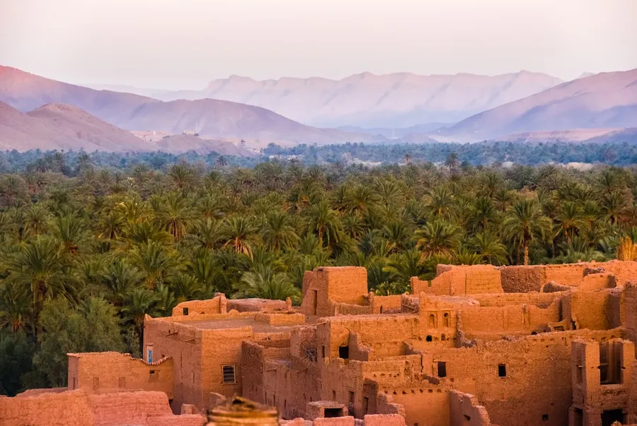
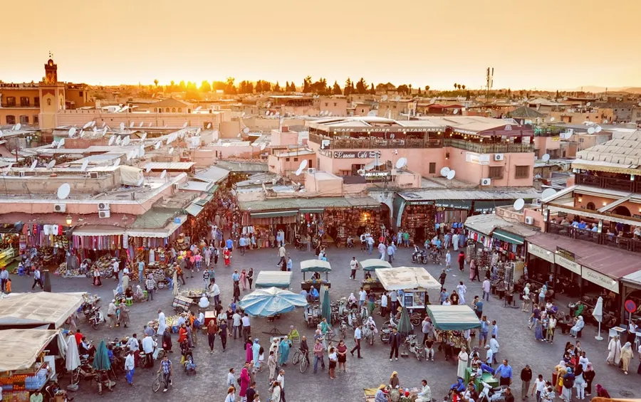
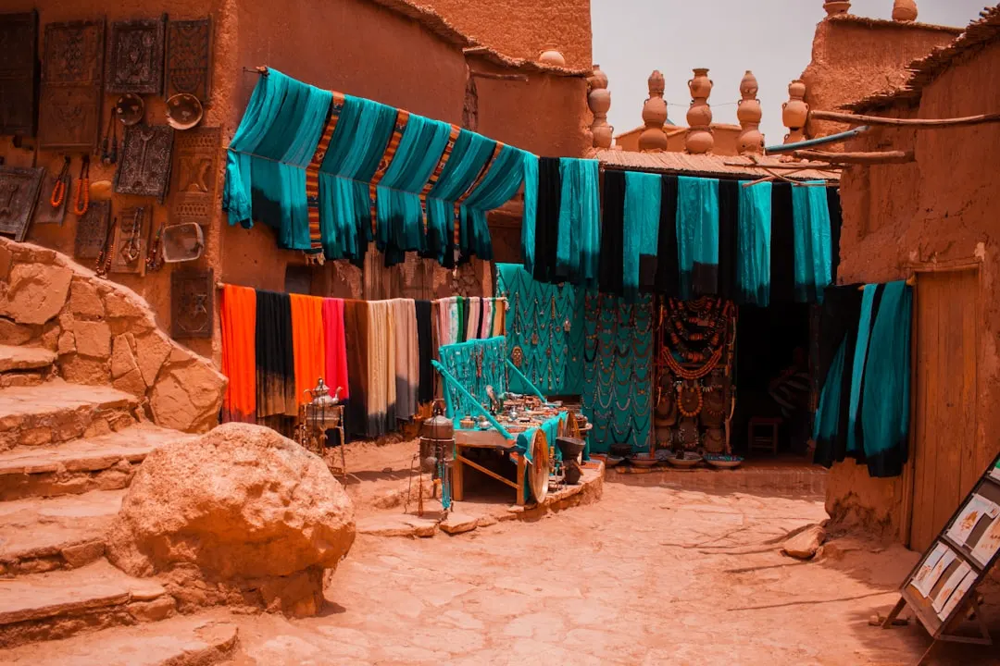

01 ⬠Pourquoi y aller
Un kaléidoscope d'expériences
Le Maroc n'est pas une simple destination, c'est une immersion totale. Ses paysages sont d'une diversité à couper le souffle : des plages atlantiques balayées par le vent aux dunes dorées du Sahara, des sommets majestueux de l'Atlas aux palmeraies luxuriantes. Chaque ville a son caractère unique, ses secrets bien gardés. Marrakech la Rouge, Fès la Spirituelle, Chefchaouen la Bleue, Essaouira la Mystique... Autant de portes ouvertes sur un patrimoine millénaire.
Mais au-delà des paysages, c'est la culture marocaine qui captive. L'art de vivre, l'hospitalité légendaire, l'artisanat foisonnant et une gastronomie enivrante vous attendent à chaque coin de rue. Marchander dans un souk, partager un thé à la menthe avec des locaux, admirer le travail des artisans maroquiniers ou dinandiers : ce sont ces moments simples qui tissent la trame d'un voyage mémorable et authentique. Le Maroc est une terre de contrastes, où l'ancien et le moderne se côtoient harmonieusement, créant une atmosphère vibrante et enchanteresse.


02 ⬠Quand partir
Mai, l'équilibre parfait
Partir au Maroc en mai, c'est choisir le moment idéal pour découvrir le pays dans ses plus beaux atours. Les températures sont agréables partout : douces sur les côtes (environ 20-25°C à Essaouira), chaudes mais supportables dans les villes impériales comme Marrakech ou Fès (autour de 25-30°C, avec des pointes possibles à 35°C mais ce n'est pas la norme), et parfaites pour la randonnée en montagne (15-25°C en journée dans l'Atlas). Le désert commence à chauffer mais reste accessible et offre des nuits magnifiquement étoilées et fraîches.
L'affluence touristique en mai est modérée, ce qui vous permet de profiter des sites sans la foule écrasante de la haute saison (printemps et automne sont des périodes prisées, mais mai est souvent un peu moins dense que l'extrême d'avril). Les prix sont plus raisonnables qu'en haute saison et les services touristiques sont pleinement opérationnels. C'est aussi la période où la nature est encore verdoyante par endroits, notamment après les pluies printanières, avant l'aridité de l'été.
Un événement à ne pas manquer si vos dates coïncident : le Festival des Roses à Kelaat M'Gouna, souvent fin mai. C'est une explosion de couleurs et de senteurs, célébrant la récolte des roses dont on extrait l'eau et l'huile. Une expérience authentique et très locale, loin des sentiers battus.
03 ⬠Les régions à explorer
Entre médinas et paysages grandioses
Marrakech et sa région : Incontournable, la ville ocre vibre autour de la place Jemaa el-Fna. En mai, les jardins Majorelle sont éclatants, et la Médina est un labyrinthe de découvertes. Profitez des journées ensoleillées pour explorer les Palais de la Bahia et El Badi. Autour, les vallées de l'Ourika ou la station d'Oukaïmeden dans l'Atlas offrent une bouffée d'air frais et des paysages somptueux, parfaits pour une excursion d'une journée.
Fès et Meknès : Plongez dans le Maroc authentique à Fès, avec sa médina classée à l'UNESCO, ses tanneries et son ambiance médiévale. Moins touristique, Meknès offre une histoire riche et les ruines romaines de Volubilis à proximité, un site fascinant sous le soleil de mai. Le climat y est similaire à Marrakech mais peut être légèrement plus sec.
Chefchaouen et le Rif : La ville bleue, nichée dans les montagnes du Rif, est une véritable carte postale. Ses ruelles peintes en bleu azur sont un havre de paix. En mai, les températures sont idéales pour flâner ou partir en randonnée dans les montagnes environnantes, offrant des vues imprenables. C'est un écrin de sérénité après l'effervescence des grandes villes.
Essaouira : Sur la côte atlantique, Essaouira offre une ambiance décontractée et venteuse. Idéale pour échapper à la chaleur intérieure, ses remparts, son port de pêche et sa médina paisible sont charmants. Mai est parfait pour y pratiquer des sports nautiques (kitesurf, planche à voile) ou simplement se balader sur la plage sans souffrir du soleil écrasant.

Photo : Frida Aguilar Estrada / Unsplash
04 ⬠ì voir & à faire
Expériences marocaines authentiques
Flâner et se perdre dans les médinas : C'est l'essence même du voyage au Maroc. Laissez-vous guider par vos sens dans les souks de Marrakech ou Fès. Admirez les artisans au travail, respirez les effluves d'épices et de cuir, et négociez un tapis ou une babouche. Chaque ruelle est une nouvelle découverte. En mai, les médinas sont animées mais pas encore saturées de touristes.
Une nuit dans le désert : Une expérience magique, surtout en mai où les nuits sont douces et le ciel incroyablement étoilé. Partez de Merzouga ou Zagora pour une balade à dos de dromadaire jusqu'à un bivouac, dînez sous les étoiles et réveillez-vous face au lever du soleil sur les dunes de l'Erg Chebbi ou l'Erg Chigaga. La journée peut être chaude, mais la fraîcheur du matin et du soir est divine.
Randonnée dans l'Atlas : Avec des températures clémentes en mai, les montagnes de l'Atlas sont un terrain de jeu magnifique pour les randonneurs. Que ce soit pour une balade facile dans une vallée verdoyante ou l'ascension de sommets plus exigeants comme le Toubkal, les paysages sont grandioses et les rencontres avec les communautés berbères enrichissantes. Prévoyez des couches de vêtements, car les températures peuvent varier rapidement avec l'altitude.
- Visiter les tanneries de Fès et les jardins Majorelle à Marrakech.
- Prendre un cours de cuisine marocaine pour maîtriser le tajine ou le couscous.
- Se détendre dans un hammam traditionnel, une expérience purifiante.
- Explorer les Gorges du Dadès et du Todra, des paysages spectaculaires.
05 ⬠La gastronomie
Un festin pour les papilles
La cuisine marocaine est un hymne aux saveurs, une explosion d'épices et d'arômes. Le plat emblématique est bien sûr le tajine, mijoté longuement avec des légumes, de la viande (poulet, agneau, bŠuf) ou du poisson, agrémenté de fruits secs et d'olives. Chaque région a sa spécialité, et vous en trouverez une infinité de variations. Le couscous, plat du vendredi par excellence, est une autre merveille à ne pas manquer, souvent servi avec sept légumes.
Mais la gastronomie marocaine ne s'arrête pas là. Goûtez la pastilla, une tourte feuilletée sucrée-salée souvent au pigeon, les brochettes de viande grillées, les soupes réconfortantes comme la Harira, et bien sûr, les innombrables pâtisseries au miel et aux amandes. Ne partez jamais sans avoir savouré un authentique thé à la menthe, symbole d'hospitalité, souvent accompagné de petits gâteaux. Et pour les aventuriers culinaires, la cuisine de rue offre des délices comme le 'tanjia' de Marrakech ou les escargots épicés de Jemaa el-Fna.
06 ⬠Où dormir
Charme et authenticité
Au Maroc, l'hébergement est une partie intégrante de l'expérience de voyage. Oubliez les hôtels standard et optez pour un riad ou une maison d'hôtes. Un riad est une ancienne demeure traditionnelle transformée en hôtel, avec un patio central souvent orné d'une fontaine ou d'un jardin. C'est un havre de paix au cŠur de l'agitation des médinas, offrant une immersion totale dans l'architecture et l'hospitalité marocaine.
Dans le désert, l'expérience incontournable est la nuit en bivouac, dans des tentes berbères traditionnelles, du confort simple au grand luxe. En dehors des villes, les kasbahs ou les gîtes ruraux offrent des séjours authentiques, souvent tenus par des familles locales. En mai, la demande est bonne mais pas excessive, ce qui permet de trouver de belles adresses à des prix raisonnables si vous réservez à l'avance, surtout pour les riads les plus prisés.
07 ⬠Budget & bons plans
Voyager malin au pays des mille et un sourires
Le Maroc peut être une destination très abordable si l'on voyage intelligemment. Un budget journalier de 50 à 90 euros permet de bien profiter en logeant dans des riads confortables et en mangeant local. Pour les hébergements, comptez 30-60 euros la nuit pour un bon riad. Les repas sont très économiques : 5-10 euros pour un plat dans un restaurant local ou sur les places, et un peu plus pour des établissements plus touristiques.
Les bons plans : Apprenez à négocier ! Que ce soit dans les souks pour vos souvenirs ou même parfois pour les taxis, le marchandage fait partie de la culture. N'hésitez pas à proposer la moitié du prix initial et à monter progressivement. Mangez dans les petits restaurants locaux ('snack') ou sur les marchés pour des plats délicieux et économiques. Les transports en commun (bus CTM ou Supratours) sont fiables et peu chers. Pensez également aux excursions organisées en groupe pour le désert, souvent plus économiques que les départs individuels, ou louez un véhicule pour plus de liberté si vous êtes plusieurs.
08 ⬠Se déplacer
Sur les routes du Maroc
Le réseau de transport au Maroc est plutôt bien développé et offre diverses options. Pour les longs trajets entre les grandes villes, les bus des compagnies CTM et Supratours sont confortables, ponctuels et climatisés, parfaits en mai. Les trains relient les principales villes comme Marrakech, Casablanca, Rabat, Fès et Tanger, offrant une manière agréable de voyager tout en admirant les paysages. Les tarifs sont abordables.
Pour les trajets plus courts ou vers des zones moins desservies, les 'grands taxis' (taxis collectifs) sont une option courante. Ils partent une fois pleins et sont économiques, mais il faut parfois être patient. En ville, les 'petits taxis' sont pratiques et le compteur est obligatoire, mais une négociation du prix avant le départ est parfois nécessaire, surtout à Marrakech. Louer une voiture est une excellente option pour explorer l'Atlas ou les routes côtières à votre rythme, mais la conduite peut être sportive et les panneaux de signalisation parfois imprécis. Gardez à l'esprit que les routes peuvent être étroites et sinueuses dans les montagnes.
09 ⬠Conseils pratiques
Pour un voyage serein
Code vestimentaire : Le Maroc est un pays musulman. Respectez les coutumes locales en optant pour des vêtements couvrants, surtout pour les femmes, en particulier lors de la visite de lieux religieux ou dans les médinas. Des vêtements légers mais amples sont parfaits pour le mois de mai. Un foulard peut être utile pour se couvrir les épaules ou la tête.
Hydratation et soleil : En mai, le soleil tape fort dans certaines r√©gions. Buvez beaucoup d'eau, utilisez de la cr√®me solaire et portez un chapeau ou une casquette, surtout lors de vos explorations diurnes. √0vitez de vous exposer au soleil aux heures les plus chaudes (entre 12h et 16h).
Monnaie et pourboires : La monnaie locale est le Dirham marocain (MAD). Il est conseillé d'avoir toujours de la petite monnaie sur soi pour les petits achats ou les pourboires. Le pourboire est une pratique courante et appréciée pour les services rendus (guides, chauffeurs, porteurs, serveurs). Quelques dirhams suffisent généralement.
Santé : Privilégiez l'eau en bouteille. Lavez-vous fréquemment les mains et utilisez du gel hydroalcoolique. Soyez vigilant avec la nourriture de rue, choisissez les étals bien achalandés. Une petite trousse de secours avec des pansements, un désinfectant et des anti-diarrhéiques peut être utile.
Le conseil Odyssa
Utilisez l'application Odyssa pour organiser votre itinéraire au jour le jour, marquer vos riads préférés et les restaurants recommandés pour ne rien manquer de votre aventure marocaine en mai.
Planifiez votre séjour à Maroc jour par jour et gardez tout hors ligne avec Odyssa ⬠gratuitement.
Télécharger Odyssa